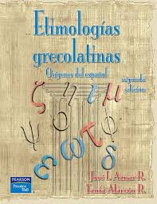

Aprendimos de dónde vienen muchas palabras que usamos todos los días y cómo se forman a partir del griego y el latín
Al principio pensé que sería difícil, pero poco a poco fui entendiendo mejor los prefijos, sufijos y raíces
Hicimos ejercicios para identificar el significado de las palabras y ampliar nuestro vocabulario
La maestra explica con ejemplos claros y nos hace participar para que la clase sea más dinámica
También vimos que muchas palabras científicas y médicas tienen origen grecolatino
Ahora entiendo mejor palabras que antes se me hacían muy complicadas
Siento que mejoré mi comprensión lectora y mi forma de expresarme
Me gustó porque aprendí cosas que no sabía sobre el origen del lenguaje
En general, fue una materia que me dejó nuevos conocimientos y me ayudó a pensar más sobre las palabras
